<!DOCTYPE html>
<html lang="zh-CN">
<head>
  <meta charset="UTF-8">
<meta name="viewport" content="width=device-width, initial-scale=1, maximum-scale=2">
<meta name="theme-color" content="#222">
<meta name="generator" content="Hexo 4.2.1">
  <link rel="apple-touch-icon" sizes="180x180" href="/images/apple-touch-icon-next.png">
  <link rel="icon" type="image/png" sizes="32x32" href="/images/favicon-32x32-next.png">
  <link rel="icon" type="image/png" sizes="16x16" href="/images/favicon-16x16-next.png">
  <link rel="mask-icon" href="/images/logo.svg" color="#222">
  <meta http-equiv="Cache-Control" content="no-transform">
  <meta http-equiv="Cache-Control" content="no-siteapp">

<link rel="stylesheet" href="/css/main.css">


<link rel="stylesheet" href="/lib/font-awesome/css/all.min.css">

<script id="hexo-configurations">
    var NexT = window.NexT || {};
    var CONFIG = {"hostname":"roubin.me","root":"/","scheme":"Pisces","version":"7.8.0","exturl":false,"sidebar":{"position":"left","display":"post","padding":18,"offset":12,"onmobile":false},"copycode":{"enable":true,"show_result":true,"style":"mac"},"back2top":{"enable":true,"sidebar":false,"scrollpercent":false},"bookmark":{"enable":false,"color":"#222","save":"auto"},"fancybox":false,"mediumzoom":false,"lazyload":false,"pangu":false,"comments":{"style":"tabs","active":null,"storage":true,"lazyload":false,"nav":null},"algolia":{"hits":{"per_page":10},"labels":{"input_placeholder":"Search for Posts","hits_empty":"We didn't find any results for the search: ${query}","hits_stats":"${hits} results found in ${time} ms"}},"localsearch":{"enable":true,"trigger":"auto","top_n_per_article":1,"unescape":false,"preload":false},"motion":{"enable":true,"async":false,"transition":{"post_block":"fadeIn","post_header":"slideDownIn","post_body":"slideDownIn","coll_header":"slideLeftIn","sidebar":"slideUpIn"}},"path":"search.xml"};
  </script>

  <meta name="description" content="之前的一些实验，主要集中在模型的搭建、训练和调优上，没有涉及部署的环节，所以这次尝试将模型部署到端侧设备（浏览器），来熟悉一下部署的流程。">
<meta property="og:type" content="article">
<meta property="og:title" content="基于ONNX的Web端YOLOv8模型部署与推理">
<meta property="og:url" content="https://roubin.me/yolov8-onnxruntime-web-deploy/index.html">
<meta property="og:site_name" content="肉饼博客">
<meta property="og:description" content="之前的一些实验，主要集中在模型的搭建、训练和调优上，没有涉及部署的环节，所以这次尝试将模型部署到端侧设备（浏览器），来熟悉一下部署的流程。">
<meta property="og:locale" content="zh_CN">
<meta property="og:image" content="https://roubin.me/images/rps_demo.png">
<meta property="og:image" content="https://roubin.me/images/rps_dataset_preview.gif">
<meta property="og:image" content="https://roubin.me/images/rps_dataset_desc.png">
<meta property="og:image" content="https://roubin.me/images/rps_train_result.png">
<meta property="og:image" content="https://roubin.me/images/rps_rgb_input.png">
<meta property="og:image" content="https://roubin.me/images/rps_js_rgb_array.png">
<meta property="og:image" content="https://roubin.me/images/rps_test_output.png">
<meta property="og:image" content="https://roubin.me/images/iou.png">
<meta property="og:image" content="https://roubin.me/images/rps_onnx_worker.png">
<meta property="og:image" content="https://roubin.me/images/rps_run_init.png">
<meta property="og:image" content="https://roubin.me/images/rps_infer_600.png">
<meta property="og:image" content="https://roubin.me/images/rps_uint8.png">
<meta property="og:image" content="https://roubin.me/images/rps_simd_thread.png">
<meta property="og:image" content="https://roubin.me/images/rps_multi_thread.png">
<meta property="og:image" content="https://roubin.me/images/rps_infer_300.png">
<meta property="article:published_time" content="2024-04-10T08:14:31.000Z">
<meta property="article:modified_time" content="2024-04-11T09:12:54.233Z">
<meta property="article:author" content="roubin">
<meta property="article:tag" content="目标检测">
<meta property="article:tag" content="yolo">
<meta property="article:tag" content="onnx">
<meta name="twitter:card" content="summary">
<meta name="twitter:image" content="https://roubin.me/images/rps_demo.png">

<link rel="canonical" href="https://roubin.me/yolov8-onnxruntime-web-deploy/">


<script id="page-configurations">
  // https://hexo.io/docs/variables.html
  CONFIG.page = {
    sidebar: "",
    isHome : false,
    isPost : true,
    lang   : 'zh-CN'
  };
</script>

  <title>基于ONNX的Web端YOLOv8模型部署与推理 | 肉饼博客</title>
  


  <script>
    var _hmt = _hmt || [];
    (function() {
      var hm = document.createElement("script");
      hm.src = "https://hm.baidu.com/hm.js?b55ece62ebeb2e72a8efe3f8b5b43960";
      var s = document.getElementsByTagName("script")[0];
      s.parentNode.insertBefore(hm, s);
    })();
  </script>


  <noscript>
  <style>
  .use-motion .brand,
  .use-motion .menu-item,
  .sidebar-inner,
  .use-motion .post-block,
  .use-motion .pagination,
  .use-motion .comments,
  .use-motion .post-header,
  .use-motion .post-body,
  .use-motion .collection-header { opacity: initial; }

  .use-motion .site-title,
  .use-motion .site-subtitle {
    opacity: initial;
    top: initial;
  }

  .use-motion .logo-line-before i { left: initial; }
  .use-motion .logo-line-after i { right: initial; }
  </style>
</noscript>

</head>

<body itemscope itemtype="http://schema.org/WebPage">
  <div class="container use-motion">
    <div class="headband"></div>

    <header class="header" itemscope itemtype="http://schema.org/WPHeader">
      <div class="header-inner"><div class="site-brand-container">
  <div class="site-nav-toggle">
    <div class="toggle" aria-label="切换导航栏">
      <span class="toggle-line toggle-line-first"></span>
      <span class="toggle-line toggle-line-middle"></span>
      <span class="toggle-line toggle-line-last"></span>
    </div>
  </div>

  <div class="site-meta">

    <a href="/" class="brand" rel="start">
      <span class="logo-line-before"><i></i></span>
      <h1 class="site-title">肉饼博客</h1>
      <span class="logo-line-after"><i></i></span>
    </a>
      <p class="site-subtitle" itemprop="description">Talk is cheap. Show me the code.</p>
  </div>

  <div class="site-nav-right">
    <div class="toggle popup-trigger">
        <i class="fa fa-search fa-fw fa-lg"></i>
    </div>
  </div>
</div>


<nav class="site-nav">
  <ul id="menu" class="main-menu menu">
        <li class="menu-item menu-item-home">

    <a href="/" rel="section"><i class="fa fa-home fa-fw"></i>首页</a>

  </li>
        <li class="menu-item menu-item-tags">

    <a href="/tags/" rel="section"><i class="fa fa-tags fa-fw"></i>标签</a>

  </li>
        <li class="menu-item menu-item-categories">

    <a href="/categories/" rel="section"><i class="fa fa-th fa-fw"></i>分类</a>

  </li>
        <li class="menu-item menu-item-archives">

    <a href="/archives/" rel="section"><i class="fa fa-archive fa-fw"></i>归档</a>

  </li>
      <li class="menu-item menu-item-search">
        <a role="button" class="popup-trigger"><i class="fa fa-search fa-fw"></i>搜索
        </a>
      </li>
  </ul>
</nav>


  <div class="search-pop-overlay">
    <div class="popup search-popup">
        <div class="search-header">
  <span class="search-icon">
    <i class="fa fa-search"></i>
  </span>
  <div class="search-input-container">
    <input autocomplete="off" autocapitalize="off"
           placeholder="搜索..." spellcheck="false"
           type="search" class="search-input">
  </div>
  <span class="popup-btn-close">
    <i class="fa fa-times-circle"></i>
  </span>
</div>
<div id="search-result">
  <div id="no-result">
    <i class="fa fa-spinner fa-pulse fa-5x fa-fw"></i>
  </div>
</div>

    </div>
  </div>

</div>
    </header>

    
  <div class="back-to-top">
    <i class="fa fa-arrow-up"></i>
    <span>0%</span>
  </div>


    <main class="main">
      <div class="main-inner">
        <div class="content-wrap">
          

          <div class="content post posts-expand">
            

    
  
  
  <article itemscope itemtype="http://schema.org/Article" class="post-block" lang="zh-CN">
    <link itemprop="mainEntityOfPage" href="https://roubin.me/yolov8-onnxruntime-web-deploy/">

    <span hidden itemprop="author" itemscope itemtype="http://schema.org/Person">
      <meta itemprop="image" content="/images/avatar.jpg">
      <meta itemprop="name" content="roubin">
      <meta itemprop="description" content="芝兰其室，金石其心<br/>仁义为友，道德为师">
    </span>

    <span hidden itemprop="publisher" itemscope itemtype="http://schema.org/Organization">
      <meta itemprop="name" content="肉饼博客">
    </span>
      <header class="post-header">
        <h1 class="post-title" itemprop="name headline">
          基于ONNX的Web端YOLOv8模型部署与推理
        </h1>

        <div class="post-meta">
            <span class="post-meta-item">
              <span class="post-meta-item-icon">
                <i class="far fa-calendar"></i>
              </span>
              <span class="post-meta-item-text">发表于</span>

              <time title="创建时间：2024-04-10 16:14:31" itemprop="dateCreated datePublished" datetime="2024-04-10T16:14:31+08:00">2024-04-10</time>
            </span>
              <span class="post-meta-item">
                <span class="post-meta-item-icon">
                  <i class="far fa-calendar-check"></i>
                </span>
                <span class="post-meta-item-text">更新于</span>
                <time title="修改时间：2024-04-11 17:12:54" itemprop="dateModified" datetime="2024-04-11T17:12:54+08:00">2024-04-11</time>
              </span>
            <span class="post-meta-item">
              <span class="post-meta-item-icon">
                <i class="far fa-folder"></i>
              </span>
              <span class="post-meta-item-text">分类于</span>
                <span itemprop="about" itemscope itemtype="http://schema.org/Thing">
                  <a href="/categories/CV/" itemprop="url" rel="index"><span itemprop="name">CV</span></a>
                </span>
            </span>

          
  
  <span class="post-meta-item">
    
      <span class="post-meta-item-icon">
        <i class="far fa-comment"></i>
      </span>
      <span class="post-meta-item-text">Disqus：</span>
    
    <a title="disqus" href="/yolov8-onnxruntime-web-deploy/#disqus_thread" itemprop="discussionUrl">
      <span class="post-comments-count disqus-comment-count" data-disqus-identifier="yolov8-onnxruntime-web-deploy/" itemprop="commentCount"></span>
    </a>
  </span>
  
  
            <span class="post-meta-item" title="本文字数">
              <span class="post-meta-item-icon">
                <i class="far fa-file-word"></i>
              </span>
                <span class="post-meta-item-text">本文字数：</span>
              <span>13k</span>
            </span>
            <span class="post-meta-item" title="阅读时长">
              <span class="post-meta-item-icon">
                <i class="far fa-clock"></i>
              </span>
                <span class="post-meta-item-text">阅读时长 &asymp;</span>
              <span>12 分钟</span>
            </span>

        </div>
      </header>

    
    
    
    <div class="post-body" itemprop="articleBody">

      
        <p>之前的一些实验，主要集中在模型的搭建、训练和调优上，没有涉及部署的环节，所以这次尝试将模型部署到端侧设备（浏览器），来熟悉一下部署的流程。</p>
<a id="more"></a>
<p><strong>整个过程大致包含如下步骤：</strong></p>
<ul>
<li>YOLOv8的自定义数据集训练</li>
<li>YOLOv8模型导出onnx格式</li>
<li>搭配onnxruntime的数据预处理</li>
<li>搭配onnxruntime的数据后处理</li>
<li>基于onnxruntime的模型量化</li>
<li>针对CPU (wasm) execution provider的性能优化措施</li>
</ul>
<p><strong>最终效果：</strong> 让模型在PC端浏览器中运行，通过调用端侧摄像头，实现了目标检测的功能。<br>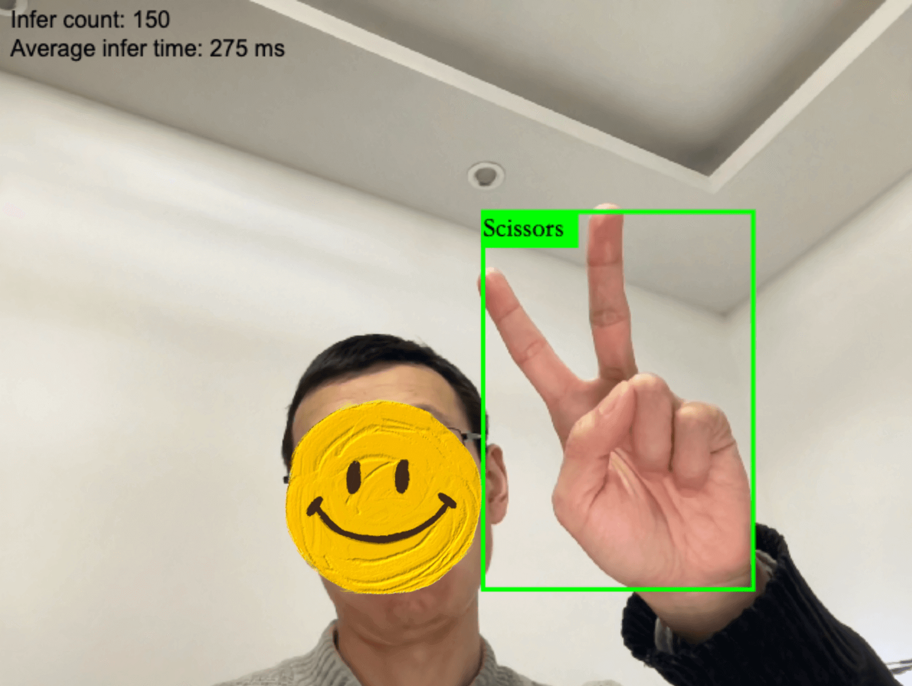</p>
<p><strong>项目完整代码参考：</strong><a href="https://github.com/satorioh/yolov8_onnx_js" target="_blank" rel="noopener">这个仓库</a></p>
<p><strong>demo地址：</strong><a href="https://rps.regulusai.top/" target="_blank" rel="noopener">Paper, Rock, Scissors Webcam Detection</a></p>
<figure class="highlight plain"><table><tr><td class="gutter"><pre><span class="line">1</span><br><span class="line">2</span><br><span class="line">3</span><br><span class="line">4</span><br></pre></td><td class="code"><pre><span class="line">建议：</span><br><span class="line">1.使用PC端浏览器开启demo，手机端算力资源有限，推理速度较慢</span><br><span class="line">2.需要给予浏览器摄像头权限</span><br><span class="line">3.由于部署在vercel海外节点，对于大文件（模型）的传输，速度不太稳定，如超过2min仍在loading，可以刷新再试</span><br></pre></td></tr></table></figure>

<h3 id="一、前期准备"><a href="#一、前期准备" class="headerlink" title="一、前期准备"></a>一、前期准备</h3><h4 id="1-数据集"><a href="#1-数据集" class="headerlink" title="1.数据集"></a>1.数据集</h4><p>考虑到最终效果需要直观、清晰、易理解，这次选择了roboflow上的<a href="https://universe.roboflow.com/roboflow-58fyf/rock-paper-scissors-sxsw" target="_blank" rel="noopener">石头剪刀布</a>目标检测数据集：<br></p>
<p>roboflow官方已经对该数据集做了几个版本的迭代，并且添加了预处理和数据增强（如下图）<br>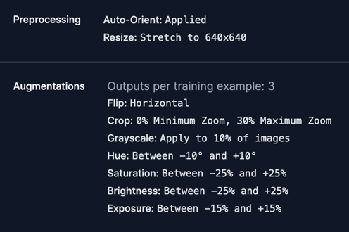</p>
<p>我下载的是<a href="https://universe.roboflow.com/roboflow-58fyf/rock-paper-scissors-sxsw/dataset/14" target="_blank" rel="noopener">v14版本</a>，包含3个类别（Rock、Paper、Scissors），7335张图片（训练集6445、验证集576、测试集304），图片尺寸统一reshape成了640x640，虽然图片数量很多，但每张只有几十kb，所以整个数据集也就238M。</p>
<h4 id="2-端侧设备与预训练模型选择"><a href="#2-端侧设备与预训练模型选择" class="headerlink" title="2.端侧设备与预训练模型选择"></a>2.端侧设备与预训练模型选择</h4><p>端侧设备：这次选择了浏览器端来部署，一是因为自己对js比较熟悉（老本行嘛），二是浏览器端有其天然优势：</p>
<ul>
<li>更快：直接把模型放在浏览器里运行，省去了请求后端的时间</li>
<li>更安全：因为模型下载到本地，即使离线也可运行，保证了一定的数据隐私</li>
<li>更便宜：直接使用客户端资源做推理，省去了租赁云端算力的开销</li>
</ul>
<p>预训练模型选择：考虑到浏览器加载模型的耗时，以及任务本身的精度要求，选择YOLOv8中最小的模型YOLOv8n比较合适</p>
<h3 id="二、模型训练"><a href="#二、模型训练" class="headerlink" title="二、模型训练"></a>二、模型训练</h3><p>训练方法可以参考我之前的<a href="https://wandb.ai/wangbinxp/yolov8_food/reports/-YOLOv8---Vmlldzo3MzEwOTE4?accessToken=uq09cnk2aei7x4669t03bnwsgrk53v00gf0fvbm80w7jb52gt7isyym17xy4thu4" target="_blank" rel="noopener">基于YOLOv8的菜品检测实验</a>，只是数据集换成了石头剪刀布，去掉了超参数调优的环节。</p>
<p>使用yolov8n模型，跑100轮，通过wandb记录训练过程，核心notebook代码如下：</p>
<figure class="highlight python"><table><tr><td class="gutter"><pre><span class="line">1</span><br><span class="line">2</span><br></pre></td><td class="code"><pre><span class="line">model = YOLO(<span class="string">'yolov8n.pt'</span>)</span><br><span class="line">results = model.train(project=<span class="string">"yolov8_rps"</span>, data=<span class="string">'./datasets/data.yaml'</span>, epochs=<span class="number">100</span>, imgsz=<span class="number">640</span>)</span><br></pre></td></tr></table></figure>

<p>最终训练结果如下，除了mAP50-95低了点，其他都在90以上：<br>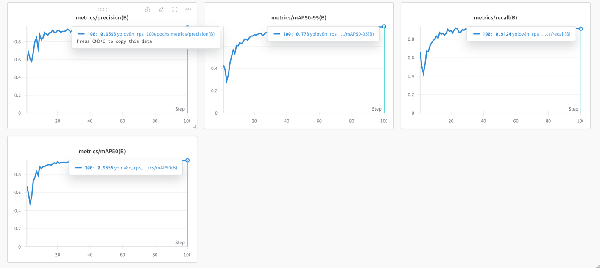</p>
<p>使用训练好的模型，跑一下视频推理（如下），效果还可以</p>
<iframe src="//player.bilibili.com/player.html?aid=1502879386&bvid=BV1mD421H7Mc&cid=1500625973&p=1&autoplay=0" scrolling="no" border="0" frameborder="no" framespacing="0" allowfullscreen="true"> </iframe>

<h3 id="三、模型导出onnx格式"><a href="#三、模型导出onnx格式" class="headerlink" title="三、模型导出onnx格式"></a>三、模型导出onnx格式</h3><h4 id="1-什么是ONNX和ONNX-Runtime"><a href="#1-什么是ONNX和ONNX-Runtime" class="headerlink" title="1.什么是ONNX和ONNX Runtime"></a>1.什么是ONNX和ONNX Runtime</h4><p>ONNX是 Open Neural Network Exchange 的缩写，是一种用于表示深度学习模型的开放格式。它使得不同的深度学习框架（如 TensorFlow、PyTorch、Caffe2 等）可以相互转换和共享模型。</p>
<p>ONNX Runtime 是由微软开发的一款推理框架，用于在多种运行后端（如 CPU、GPU、TensorRT、DML 等）上运行 ONNX 格式的模型 。ONNX Runtime支持跨平台、高性能的深度学习推理，可以加载和运行 ONNX 格式的模型 。它可以与各种深度学习框架无缝集成，提供了简单易用的 API，并支持多种编程语言和平台</p>
<h4 id="2-导出onnx格式"><a href="#2-导出onnx格式" class="headerlink" title="2.导出onnx格式"></a>2.导出onnx格式</h4><p>导出可以直接使用YOLOv8官方封装好的<code>export</code>方法，支持多种格式导出，其中就包括ONNX</p>
<p>具体参数选项可参考<a href="https://docs.ultralytics.com/modes/export/#arguments" target="_blank" rel="noopener">官方文档</a>，运行如下代码，导出为ONNX格式：</p>
<figure class="highlight python"><table><tr><td class="gutter"><pre><span class="line">1</span><br><span class="line">2</span><br><span class="line">3</span><br><span class="line">4</span><br></pre></td><td class="code"><pre><span class="line"><span class="keyword">from</span> ultralytics <span class="keyword">import</span> YOLO</span><br><span class="line"></span><br><span class="line">model = YOLO(<span class="string">'./rps_best.pt'</span>) <span class="comment"># 加载之前训练好的模型</span></span><br><span class="line">model.export(format=<span class="string">'onnx'</span>)</span><br></pre></td></tr></table></figure>
<p>控制台输出如下：</p>
<figure class="highlight shell"><table><tr><td class="gutter"><pre><span class="line">1</span><br><span class="line">2</span><br><span class="line">3</span><br><span class="line">4</span><br><span class="line">5</span><br><span class="line">6</span><br><span class="line">7</span><br><span class="line">8</span><br><span class="line">9</span><br><span class="line">10</span><br><span class="line">11</span><br><span class="line">12</span><br><span class="line">13</span><br><span class="line">14</span><br><span class="line">15</span><br><span class="line">16</span><br><span class="line">17</span><br><span class="line">18</span><br><span class="line">19</span><br><span class="line">20</span><br><span class="line">21</span><br><span class="line">22</span><br><span class="line">23</span><br><span class="line">24</span><br><span class="line">25</span><br><span class="line">26</span><br><span class="line">27</span><br></pre></td><td class="code"><pre><span class="line">Ultralytics YOLOv8.1.45 🚀 Python-3.10.12 torch-2.2.1+cu121 CPU (Intel Xeon 2.20GHz)</span><br><span class="line">Model summary (fused): 168 layers, 3006233 parameters, 0 gradients, 8.1 GFLOPs</span><br><span class="line"></span><br><span class="line">PyTorch: starting from 'rps_best.pt' with input shape (1, 3, 640, 640) BCHW and output shape(s) (1, 7, 8400) (6.0 MB)</span><br><span class="line">requirements: Ultralytics requirement ['onnx&gt;=1.12.0'] not found, attempting AutoUpdate...</span><br><span class="line">Collecting onnx&gt;=1.12.0</span><br><span class="line">  Downloading onnx-1.16.0-cp310-cp310-manylinux_2_17_x86_64.manylinux2014_x86_64.whl (15.9 MB)</span><br><span class="line">     ━━━━━━━━━━━━━━━━━━━━━━━━━━━━━━━━━━━━━━━━ 15.9/15.9 MB 41.0 MB/s eta 0:00:00</span><br><span class="line">Requirement already satisfied: numpy&gt;=1.20 in /usr/local/lib/python3.10/dist-packages (from onnx&gt;=1.12.0) (1.25.2)</span><br><span class="line">Requirement already satisfied: protobuf&gt;=3.20.2 in /usr/local/lib/python3.10/dist-packages (from onnx&gt;=1.12.0) (3.20.3)</span><br><span class="line">Installing collected packages: onnx</span><br><span class="line">Successfully installed onnx-1.16.0</span><br><span class="line"></span><br><span class="line">requirements: AutoUpdate success ✅ 18.0s, installed 1 package: ['onnx&gt;=1.12.0']</span><br><span class="line">requirements: ⚠️ Restart runtime or rerun command for updates to take effect</span><br><span class="line"></span><br><span class="line"></span><br><span class="line">ONNX: starting export with onnx 1.16.0 opset 17...</span><br><span class="line">ONNX: export success ✅ 20.5s, saved as 'rps_best.onnx' (11.7 MB)</span><br><span class="line"></span><br><span class="line">Export complete (25.5s)</span><br><span class="line">Results saved to /content</span><br><span class="line">Predict:         yolo predict task=detect model=rps_best.onnx imgsz=640  </span><br><span class="line">Validate:        yolo val task=detect model=rps_best.onnx imgsz=640 data=./datasets/data.yaml  </span><br><span class="line">Visualize:       https://netron.app</span><br><span class="line"></span><br><span class="line">'rps_best.onnx'</span><br></pre></td></tr></table></figure>
<p>导出的模型大概有12M，输出信息中有一个<code>opset 17</code>比较重要，表示对模型算子的支持版本，较新的版本支持更多算子，较老的则对平台兼容性更好，详情可参考<a href="https://onnxruntime.ai/docs/reference/compatibility.html" target="_blank" rel="noopener">官方说明</a></p>
<h3 id="四、搭配onnxruntime的数据预处理"><a href="#四、搭配onnxruntime的数据预处理" class="headerlink" title="四、搭配onnxruntime的数据预处理"></a>四、搭配onnxruntime的数据预处理</h3><h4 id="1-YOLOv8和onnxruntime在使用上的区别"><a href="#1-YOLOv8和onnxruntime在使用上的区别" class="headerlink" title="1.YOLOv8和onnxruntime在使用上的区别"></a>1.YOLOv8和onnxruntime在使用上的区别</h4><p>对于目标检测模型（比如YOLOv8）的推理过程，通常是这样的:</p>
<ul>
<li>(1)读取图片 </li>
<li>(2)对图片数据做预处理，以符合模型input层的格式</li>
<li>(3)模型加载处理后的图片数据</li>
<li>(4)模型输出</li>
<li>(5)解析模型输出，将相关信息绘制到原始图片上</li>
</ul>
<p>比如YOLOv8官方已经将上述步骤都封装在了<code>predict</code>方法里，直接调用就行。但是onnxruntime不同，因为它需要支持多种深度学习框架、多个平台、各种不同的模型，它实现的是一个通用的API，只包含上述过程的(3)和(4)，其他需要我们自己来实现。</p>
<h4 id="2-python版的数据预处理"><a href="#2-python版的数据预处理" class="headerlink" title="2.python版的数据预处理"></a>2.python版的数据预处理</h4><p>先介绍python的实现，因为python在对数据张量的处理方面，有很多高效的库，能让整个流程看起来更清晰易懂。</p>
<p>安装并导入onnxruntime</p>
<figure class="highlight python"><table><tr><td class="gutter"><pre><span class="line">1</span><br><span class="line">2</span><br></pre></td><td class="code"><pre><span class="line">!pip install onnxruntime</span><br><span class="line"><span class="keyword">import</span> onnxruntime <span class="keyword">as</span> ort</span><br></pre></td></tr></table></figure>

<p>加载onnx模型并实例化</p>
<figure class="highlight python"><table><tr><td class="gutter"><pre><span class="line">1</span><br></pre></td><td class="code"><pre><span class="line">ort_model = ort.InferenceSession(<span class="string">'./rps_best.onnx'</span>)</span><br></pre></td></tr></table></figure>

<p>查看模型input层shape</p>
<figure class="highlight python"><table><tr><td class="gutter"><pre><span class="line">1</span><br><span class="line">2</span><br><span class="line">3</span><br><span class="line">4</span><br></pre></td><td class="code"><pre><span class="line"><span class="keyword">for</span> input <span class="keyword">in</span> ort_model.get_inputs():</span><br><span class="line">    print(<span class="string">"input name: "</span>, input.name)</span><br><span class="line">    print(<span class="string">"input shape: "</span>, input.shape)</span><br><span class="line">    print(<span class="string">"input type: "</span>, input.type)</span><br></pre></td></tr></table></figure>

<p>打印结果如下: </p>
<figure class="highlight python"><table><tr><td class="gutter"><pre><span class="line">1</span><br><span class="line">2</span><br><span class="line">3</span><br></pre></td><td class="code"><pre><span class="line">Name: images</span><br><span class="line">Type: tensor(float)</span><br><span class="line">Shape: [<span class="number">1</span>, <span class="number">3</span>, <span class="number">640</span>, <span class="number">640</span>]</span><br></pre></td></tr></table></figure>
<p>输入为四维浮点数据，包含一张3通道（RGB）的图片，尺寸640x640，像下面这样：</p>
<p>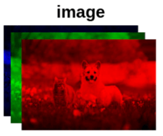</p>
<p>以单张图片为例，使用PIL调整图片尺寸</p>
<figure class="highlight python"><table><tr><td class="gutter"><pre><span class="line">1</span><br><span class="line">2</span><br><span class="line">3</span><br><span class="line">4</span><br><span class="line">5</span><br><span class="line">6</span><br></pre></td><td class="code"><pre><span class="line">!pip install pillow</span><br><span class="line"><span class="keyword">from</span> PIL <span class="keyword">import</span> Image</span><br><span class="line"></span><br><span class="line">img = Image.open(<span class="string">"test.jpg"</span>)</span><br><span class="line">img_width, img_height = img.size</span><br><span class="line">img = img.resize((<span class="number">640</span>,<span class="number">640</span>))</span><br></pre></td></tr></table></figure>
<p>删除alpha通道</p>
<figure class="highlight python"><table><tr><td class="gutter"><pre><span class="line">1</span><br></pre></td><td class="code"><pre><span class="line">img = img.convert(<span class="string">"RGB"</span>)</span><br></pre></td></tr></table></figure>

<p>将图片数据转换为浮点数矩阵</p>
<figure class="highlight python"><table><tr><td class="gutter"><pre><span class="line">1</span><br><span class="line">2</span><br><span class="line">3</span><br></pre></td><td class="code"><pre><span class="line"><span class="keyword">import</span> numpy <span class="keyword">as</span> np</span><br><span class="line"></span><br><span class="line">input = np.array(img)</span><br></pre></td></tr></table></figure>

<p>查看当前数据的shape</p>
<figure class="highlight python"><table><tr><td class="gutter"><pre><span class="line">1</span><br><span class="line">2</span><br></pre></td><td class="code"><pre><span class="line">input.shape</span><br><span class="line">output:(<span class="number">640</span>, <span class="number">640</span>, <span class="number">3</span>)</span><br></pre></td></tr></table></figure>

<p>由于我们需要的是(3, 640, 640)，得做一下转换</p>
<figure class="highlight python"><table><tr><td class="gutter"><pre><span class="line">1</span><br><span class="line">2</span><br><span class="line">3</span><br><span class="line">4</span><br></pre></td><td class="code"><pre><span class="line">input = input.transpose(<span class="number">2</span>,<span class="number">0</span>,<span class="number">1</span>)</span><br><span class="line"></span><br><span class="line">input.shape</span><br><span class="line">output:(<span class="number">3</span>, <span class="number">640</span>, <span class="number">640</span>)</span><br></pre></td></tr></table></figure>

<p>由于需要的格式是四维的，还要做一下升维</p>
<figure class="highlight python"><table><tr><td class="gutter"><pre><span class="line">1</span><br><span class="line">2</span><br><span class="line">3</span><br><span class="line">4</span><br></pre></td><td class="code"><pre><span class="line">input = input.reshape(<span class="number">1</span>,<span class="number">3</span>,<span class="number">640</span>,<span class="number">640</span>) <span class="comment">#或者用expand_dims</span></span><br><span class="line"></span><br><span class="line">input.shape</span><br><span class="line">output:(<span class="number">1</span>, <span class="number">3</span>, <span class="number">640</span>, <span class="number">640</span>)</span><br></pre></td></tr></table></figure>

<p>shape对了，还要对数据做归一化</p>
<figure class="highlight python"><table><tr><td class="gutter"><pre><span class="line">1</span><br><span class="line">2</span><br><span class="line">3</span><br><span class="line">4</span><br></pre></td><td class="code"><pre><span class="line">input = input/<span class="number">255.0</span></span><br><span class="line"></span><br><span class="line">input[<span class="number">0</span>,<span class="number">0</span>,<span class="number">0</span>,<span class="number">0</span>]</span><br><span class="line">output: <span class="number">0.9137254901960784</span></span><br></pre></td></tr></table></figure>
<p>至此，python版的数据预处理完成</p>
<h4 id="3-javascript版的数据预处理"><a href="#3-javascript版的数据预处理" class="headerlink" title="3.javascript版的数据预处理"></a>3.javascript版的数据预处理</h4><p>首先，通过canvas的<code>getImageData</code>获取图片的像素数组</p>
<figure class="highlight javascript"><table><tr><td class="gutter"><pre><span class="line">1</span><br><span class="line">2</span><br><span class="line">3</span><br><span class="line">4</span><br><span class="line">5</span><br><span class="line">6</span><br><span class="line">7</span><br><span class="line">8</span><br><span class="line">9</span><br></pre></td><td class="code"><pre><span class="line"><span class="function"><span class="keyword">function</span> <span class="title">prepare_input</span>(<span class="params">img</span>) </span>&#123;</span><br><span class="line">  <span class="keyword">const</span> canvas = <span class="built_in">document</span>.createElement(<span class="string">"canvas"</span>);</span><br><span class="line">  canvas.width = <span class="number">640</span>;</span><br><span class="line">  canvas.height = <span class="number">640</span>;</span><br><span class="line">  <span class="keyword">const</span> context = canvas.getContext(<span class="string">"2d"</span>);</span><br><span class="line">  context.drawImage(img, <span class="number">0</span>, <span class="number">0</span>, <span class="number">640</span>, <span class="number">640</span>);</span><br><span class="line"></span><br><span class="line">  <span class="keyword">const</span> data = context.getImageData(<span class="number">0</span>, <span class="number">0</span>, <span class="number">640</span>, <span class="number">640</span>).data;</span><br><span class="line">&#125;</span><br></pre></td></tr></table></figure>
<p>此时拿到的data是一个一维数组，需要按下图做转换：<br>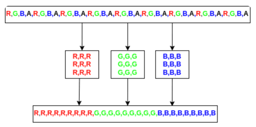</p>
<figure class="highlight python"><table><tr><td class="gutter"><pre><span class="line">1</span><br><span class="line">2</span><br><span class="line">3</span><br><span class="line">4</span><br><span class="line">5</span><br><span class="line">6</span><br><span class="line">7</span><br><span class="line">8</span><br><span class="line">9</span><br><span class="line">10</span><br></pre></td><td class="code"><pre><span class="line">const red = [],</span><br><span class="line">green = [],</span><br><span class="line">blue = [];</span><br><span class="line"></span><br><span class="line"><span class="keyword">for</span> (let index = <span class="number">0</span>; index &lt; data.length; index += <span class="number">4</span>) &#123;</span><br><span class="line">  red.push(data[index] / <span class="number">255</span>);</span><br><span class="line">  green.push(data[index + <span class="number">1</span>] / <span class="number">255</span>);</span><br><span class="line">  blue.push(data[index + <span class="number">2</span>] / <span class="number">255</span>);</span><br><span class="line">&#125;</span><br><span class="line"><span class="keyword">return</span> [...red, ...green, ...blue];</span><br></pre></td></tr></table></figure>
<p>javascript版的数据预处理就是这些</p>
<h3 id="五、搭配onnxruntime的数据后处理"><a href="#五、搭配onnxruntime的数据后处理" class="headerlink" title="五、搭配onnxruntime的数据后处理"></a>五、搭配onnxruntime的数据后处理</h3><h4 id="1-python版的数据后处理"><a href="#1-python版的数据后处理" class="headerlink" title="1.python版的数据后处理"></a>1.python版的数据后处理</h4><p>先查看模型输出的shape</p>
<figure class="highlight python"><table><tr><td class="gutter"><pre><span class="line">1</span><br><span class="line">2</span><br><span class="line">3</span><br><span class="line">4</span><br><span class="line">5</span><br></pre></td><td class="code"><pre><span class="line">outputs = ort_model.get_outputs()</span><br><span class="line">output = outputs[<span class="number">0</span>]</span><br><span class="line">print(<span class="string">"Name:"</span>,output.name)</span><br><span class="line">print(<span class="string">"Type:"</span>,output.type)</span><br><span class="line">print(<span class="string">"Shape:"</span>,output.shape)</span><br></pre></td></tr></table></figure>
<p>打印结果如下：模型返回一个三维浮点数组，代表一张图片上有8400个检测框（8400是YOLOv8可以检测的最大边界框数量，并且无论实际检测到多少个对象，它都会为任何图像返回 8400 行），每个框有4个坐标点信息+3个类别置信度</p>
<figure class="highlight shell"><table><tr><td class="gutter"><pre><span class="line">1</span><br><span class="line">2</span><br><span class="line">3</span><br></pre></td><td class="code"><pre><span class="line">Name: output0</span><br><span class="line">Type: tensor(float)</span><br><span class="line">Shape: [1, 7, 8400]</span><br></pre></td></tr></table></figure>
<p>可以用模型跑一下推理，看一下实际的输出</p>
<figure class="highlight python"><table><tr><td class="gutter"><pre><span class="line">1</span><br><span class="line">2</span><br><span class="line">3</span><br><span class="line">4</span><br></pre></td><td class="code"><pre><span class="line">input = input.astype(np.float32) <span class="comment"># input代表预处理后的数据，这里先转成单精度浮点</span></span><br><span class="line">outputs = ort_model.run([<span class="string">"output0"</span>], &#123;<span class="string">"images"</span>:input&#125;)</span><br><span class="line">output = outputs[<span class="number">0</span>]</span><br><span class="line">output.shape <span class="comment"># (1, 7, 8400)</span></span><br></pre></td></tr></table></figure>
<p>取出其中的二维数据，做转置，方便后续处理</p>
<figure class="highlight python"><table><tr><td class="gutter"><pre><span class="line">1</span><br><span class="line">2</span><br><span class="line">3</span><br><span class="line">4</span><br></pre></td><td class="code"><pre><span class="line">output = output[<span class="number">0</span>]</span><br><span class="line">output.shape <span class="comment"># (7, 8400)</span></span><br><span class="line">output = output.transpose() <span class="comment"># 转置</span></span><br><span class="line">output.shape <span class="comment"># (8400, 7)</span></span><br></pre></td></tr></table></figure>
<p>这里的(8400, 7)代表有8400行7列，可以看下第一行的数据</p>
<figure class="highlight python"><table><tr><td class="gutter"><pre><span class="line">1</span><br><span class="line">2</span><br><span class="line">3</span><br></pre></td><td class="code"><pre><span class="line">row = output[<span class="number">0</span>]</span><br><span class="line">print(row) </span><br><span class="line"><span class="comment"># [     14.623      22.475      29.157      45.249  1.4901e-07  3.2783e-07  5.9605e-08]</span></span><br></pre></td></tr></table></figure>
<p>前4项代表检测框的xcenter、ycenter、width、height，后面3项代表’Paper’, ‘Rock’, ‘Scissors’的概率，这里需要将坐标信息转换为x1y1(矩形框左上角),x2y2(矩形框右下角)形式，方便画图，还要获取最大概率值和对应的类别</p>
<figure class="highlight python"><table><tr><td class="gutter"><pre><span class="line">1</span><br><span class="line">2</span><br><span class="line">3</span><br><span class="line">4</span><br><span class="line">5</span><br><span class="line">6</span><br><span class="line">7</span><br><span class="line">8</span><br><span class="line">9</span><br><span class="line">10</span><br><span class="line">11</span><br><span class="line">12</span><br></pre></td><td class="code"><pre><span class="line">yolo_classes = [<span class="string">'Paper'</span>, <span class="string">'Rock'</span>, <span class="string">'Scissors'</span>]</span><br><span class="line"></span><br><span class="line"><span class="function"><span class="keyword">def</span> <span class="title">parse_row</span><span class="params">(row)</span>:</span></span><br><span class="line">    xc,yc,w,h = row[:<span class="number">4</span>]</span><br><span class="line">    x1 = (xc-w/<span class="number">2</span>)/<span class="number">640</span>*img_width</span><br><span class="line">    y1 = (yc-h/<span class="number">2</span>)/<span class="number">640</span>*img_height</span><br><span class="line">    x2 = (xc+w/<span class="number">2</span>)/<span class="number">640</span>*img_width</span><br><span class="line">    y2 = (yc+h/<span class="number">2</span>)/<span class="number">640</span>*img_height</span><br><span class="line">    prob = row[<span class="number">4</span>:].max()</span><br><span class="line">    class_id = row[<span class="number">4</span>:].argmax()</span><br><span class="line">    label = yolo_classes[class_id]</span><br><span class="line">    <span class="keyword">return</span> [x1,y1,x2,y2,label,prob]</span><br></pre></td></tr></table></figure>
<p>对于模型返回的概率较低的检测框我们需要过滤掉，这里设置丢弃概率&lt;0.5的框</p>
<figure class="highlight python"><table><tr><td class="gutter"><pre><span class="line">1</span><br><span class="line">2</span><br><span class="line">3</span><br></pre></td><td class="code"><pre><span class="line">boxes = [row <span class="keyword">for</span> row <span class="keyword">in</span> [parse_row(row) <span class="keyword">for</span> row <span class="keyword">in</span> output] <span class="keyword">if</span> row[<span class="number">5</span>]&gt;<span class="number">0.5</span>]</span><br><span class="line"></span><br><span class="line">len(boxes) <span class="comment"># 20</span></span><br></pre></td></tr></table></figure>
<p>还有20个框，将这20个框绘制到测试图片上，可以发现它们很多都是重叠的</p>
<figure class="highlight python"><table><tr><td class="gutter"><pre><span class="line">1</span><br><span class="line">2</span><br><span class="line">3</span><br><span class="line">4</span><br><span class="line">5</span><br><span class="line">6</span><br><span class="line">7</span><br></pre></td><td class="code"><pre><span class="line"><span class="keyword">from</span> PIL <span class="keyword">import</span> ImageDraw</span><br><span class="line">img = Image.open(<span class="string">"test.jpg"</span>)</span><br><span class="line">draw = ImageDraw.Draw(img)</span><br><span class="line"></span><br><span class="line"><span class="keyword">for</span> box <span class="keyword">in</span> boxes:</span><br><span class="line">    x1,y1,x2,y2,class_id,prob = box</span><br><span class="line">    draw.rectangle((x1,y1,x2,y2),<span class="literal">None</span>,<span class="string">"#00ff00"</span>)</span><br></pre></td></tr></table></figure>
<p>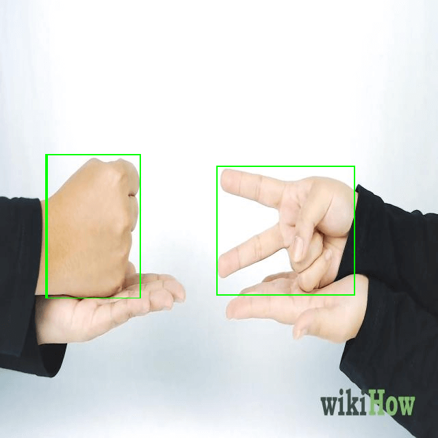<br>这时候就需要使用NMS算法做处理</p>
<h4 id="2-IoU与NMS的实现"><a href="#2-IoU与NMS的实现" class="headerlink" title="2.IoU与NMS的实现"></a>2.IoU与NMS的实现</h4><p>IoU：可以使用IoU（Intersection over Union，交并比）来判断检测框定位的好坏。所谓交并比，是指预测边框与实际边框的交集和并集的比率，取值范围为0～1，越接近1越好<br>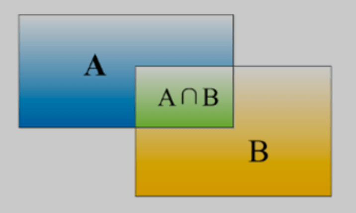<br>代码实现：</p>
<figure class="highlight python"><table><tr><td class="gutter"><pre><span class="line">1</span><br><span class="line">2</span><br><span class="line">3</span><br><span class="line">4</span><br><span class="line">5</span><br><span class="line">6</span><br><span class="line">7</span><br><span class="line">8</span><br><span class="line">9</span><br><span class="line">10</span><br><span class="line">11</span><br><span class="line">12</span><br><span class="line">13</span><br><span class="line">14</span><br><span class="line">15</span><br><span class="line">16</span><br><span class="line">17</span><br><span class="line">18</span><br></pre></td><td class="code"><pre><span class="line"><span class="function"><span class="keyword">def</span> <span class="title">intersection</span><span class="params">(box1,box2)</span>:</span></span><br><span class="line">    box1_x1,box1_y1,box1_x2,box1_y2 = box1[:<span class="number">4</span>]</span><br><span class="line">    box2_x1,box2_y1,box2_x2,box2_y2 = box2[:<span class="number">4</span>]</span><br><span class="line">    x1 = max(box1_x1,box2_x1)</span><br><span class="line">    y1 = max(box1_y1,box2_y1)</span><br><span class="line">    x2 = min(box1_x2,box2_x2)</span><br><span class="line">    y2 = min(box1_y2,box2_y2)</span><br><span class="line">    <span class="keyword">return</span> (x2-x1)*(y2-y1)</span><br><span class="line">    </span><br><span class="line"><span class="function"><span class="keyword">def</span> <span class="title">union</span><span class="params">(box1,box2)</span>:</span></span><br><span class="line">    box1_x1,box1_y1,box1_x2,box1_y2 = box1[:<span class="number">4</span>]</span><br><span class="line">    box2_x1,box2_y1,box2_x2,box2_y2 = box2[:<span class="number">4</span>]</span><br><span class="line">    box1_area = (box1_x2-box1_x1)*(box1_y2-box1_y1)</span><br><span class="line">    box2_area = (box2_x2-box2_x1)*(box2_y2-box2_y1)</span><br><span class="line">    <span class="keyword">return</span> box1_area + box2_area - intersection(box1,box2)</span><br><span class="line">    </span><br><span class="line"><span class="function"><span class="keyword">def</span> <span class="title">iou</span><span class="params">(box1,box2)</span>:</span></span><br><span class="line">    <span class="keyword">return</span> intersection(box1,box2)/union(box1,box2)</span><br></pre></td></tr></table></figure>


<p>NMS：预测结果中，可能多个预测结果间存在重叠部分，需要保留交并比（IoU）最大的、去掉非最大的预测结果，这就是非极大值抑制（Non-Maximum Suppression，简写作NMS）</p>
<p>NMS的算法步骤如下：</p>
<ul>
<li>将所有框放入队列中</li>
<li>先找到置信度最高的框（假设为A）</li>
<li>将A放入结果数组中</li>
<li>依次计算其他框与A的IoU值</li>
<li>如果某个框（假设为B）的IoU大于给定阈值（比如0.7），则认为B和A框定的是同一个物体，删除B</li>
<li>循环上述步骤，直到队列中没有框了</li>
</ul>
<p>代码实现：</p>
<figure class="highlight python"><table><tr><td class="gutter"><pre><span class="line">1</span><br><span class="line">2</span><br><span class="line">3</span><br><span class="line">4</span><br><span class="line">5</span><br><span class="line">6</span><br><span class="line">7</span><br><span class="line">8</span><br></pre></td><td class="code"><pre><span class="line"><span class="comment"># NMS</span></span><br><span class="line">boxes.sort(key=<span class="keyword">lambda</span> x: x[<span class="number">5</span>], reverse=<span class="literal">True</span>)</span><br><span class="line"></span><br><span class="line">result = []</span><br><span class="line"></span><br><span class="line"><span class="keyword">while</span> len(boxes)&gt;<span class="number">0</span>:</span><br><span class="line">    result.append(boxes[<span class="number">0</span>])</span><br><span class="line">    boxes = [box <span class="keyword">for</span> box <span class="keyword">in</span> boxes <span class="keyword">if</span> iou(box,boxes[<span class="number">0</span>])&lt;<span class="number">0.7</span>] <span class="comment">#&lt;0.7则不是同一物体，要保留</span></span><br></pre></td></tr></table></figure>
<p>经过NMS处理后，result中只剩2个框了</p>
<figure class="highlight python"><table><tr><td class="gutter"><pre><span class="line">1</span><br><span class="line">2</span><br><span class="line">3</span><br><span class="line">4</span><br><span class="line">5</span><br><span class="line">6</span><br><span class="line">7</span><br><span class="line">8</span><br><span class="line">9</span><br><span class="line">10</span><br><span class="line">11</span><br><span class="line">12</span><br><span class="line">13</span><br><span class="line">14</span><br></pre></td><td class="code"><pre><span class="line">print(result)</span><br><span class="line"></span><br><span class="line">[[<span class="number">316.81634521484375</span>,</span><br><span class="line">  <span class="number">242.34803009033203</span>,</span><br><span class="line">  <span class="number">517.7810668945312</span>,</span><br><span class="line">  <span class="number">431.6143112182617</span>,</span><br><span class="line">  <span class="string">'Scissors'</span>,</span><br><span class="line">  <span class="number">0.9387282</span>],</span><br><span class="line"> [<span class="number">69.72752380371094</span>,</span><br><span class="line">  <span class="number">226.46387481689453</span>,</span><br><span class="line">  <span class="number">205.6693878173828</span>,</span><br><span class="line">  <span class="number">435.36669158935547</span>,</span><br><span class="line">  <span class="string">'Rock'</span>,</span><br><span class="line">  <span class="number">0.9296297</span>]]</span><br></pre></td></tr></table></figure>

<h4 id="3-javascript版的数据后处理"><a href="#3-javascript版的数据后处理" class="headerlink" title="3.javascript版的数据后处理"></a>3.javascript版的数据后处理</h4><p>计算IoU的实现</p>
<figure class="highlight javascript"><table><tr><td class="gutter"><pre><span class="line">1</span><br><span class="line">2</span><br><span class="line">3</span><br><span class="line">4</span><br><span class="line">5</span><br><span class="line">6</span><br><span class="line">7</span><br><span class="line">8</span><br><span class="line">9</span><br><span class="line">10</span><br><span class="line">11</span><br><span class="line">12</span><br><span class="line">13</span><br><span class="line">14</span><br><span class="line">15</span><br><span class="line">16</span><br><span class="line">17</span><br><span class="line">18</span><br><span class="line">19</span><br><span class="line">20</span><br><span class="line">21</span><br></pre></td><td class="code"><pre><span class="line"><span class="function"><span class="keyword">function</span> <span class="title">iou</span>(<span class="params">box1, box2</span>) </span>&#123;</span><br><span class="line">  <span class="keyword">return</span> intersection(box1, box2) / union(box1, box2);</span><br><span class="line">&#125;</span><br><span class="line"></span><br><span class="line"><span class="function"><span class="keyword">function</span> <span class="title">union</span>(<span class="params">box1, box2</span>) </span>&#123;</span><br><span class="line">  <span class="keyword">const</span> [box1_x1, box1_y1, box1_x2, box1_y2] = box1;</span><br><span class="line">  <span class="keyword">const</span> [box2_x1, box2_y1, box2_x2, box2_y2] = box2;</span><br><span class="line">  <span class="keyword">const</span> box1_area = (box1_x2 - box1_x1) * (box1_y2 - box1_y1);</span><br><span class="line">  <span class="keyword">const</span> box2_area = (box2_x2 - box2_x1) * (box2_y2 - box2_y1);</span><br><span class="line">  <span class="keyword">return</span> box1_area + box2_area - intersection(box1, box2);</span><br><span class="line">&#125;</span><br><span class="line"></span><br><span class="line"><span class="function"><span class="keyword">function</span> <span class="title">intersection</span>(<span class="params">box1, box2</span>) </span>&#123;</span><br><span class="line">  <span class="keyword">const</span> [box1_x1, box1_y1, box1_x2, box1_y2] = box1;</span><br><span class="line">  <span class="keyword">const</span> [box2_x1, box2_y1, box2_x2, box2_y2] = box2;</span><br><span class="line">  <span class="keyword">const</span> x1 = <span class="built_in">Math</span>.max(box1_x1, box2_x1);</span><br><span class="line">  <span class="keyword">const</span> y1 = <span class="built_in">Math</span>.max(box1_y1, box2_y1);</span><br><span class="line">  <span class="keyword">const</span> x2 = <span class="built_in">Math</span>.min(box1_x2, box2_x2);</span><br><span class="line">  <span class="keyword">const</span> y2 = <span class="built_in">Math</span>.min(box1_y2, box2_y2);</span><br><span class="line">  <span class="keyword">return</span> (x2 - x1) * (y2 - y1);</span><br><span class="line">&#125;</span><br></pre></td></tr></table></figure>

<p>获取x1、y1、x2、y2、最大置信度和对应的类别，这里没有做行列的转置，而是直接使用了绝对索引来定位</p>
<figure class="highlight javascript"><table><tr><td class="gutter"><pre><span class="line">1</span><br><span class="line">2</span><br><span class="line">3</span><br><span class="line">4</span><br><span class="line">5</span><br><span class="line">6</span><br><span class="line">7</span><br><span class="line">8</span><br><span class="line">9</span><br><span class="line">10</span><br><span class="line">11</span><br><span class="line">12</span><br><span class="line">13</span><br><span class="line">14</span><br><span class="line">15</span><br><span class="line">16</span><br><span class="line">17</span><br><span class="line">18</span><br></pre></td><td class="code"><pre><span class="line"><span class="keyword">for</span> (<span class="keyword">let</span> index = <span class="number">0</span>; index &lt; <span class="number">8400</span>; index++) &#123;</span><br><span class="line">    <span class="keyword">const</span> [class_id, prob] = [...Array(yolo_classes.length).keys()]</span><br><span class="line">      .map(<span class="function">(<span class="params">col</span>) =&gt;</span> [col, output[<span class="number">8400</span> * (col + <span class="number">4</span>) + index]])</span><br><span class="line">      .reduce(<span class="function">(<span class="params">accum, item</span>) =&gt;</span> (item[<span class="number">1</span>] &gt; accum[<span class="number">1</span>] ? item : accum), [<span class="number">0</span>, <span class="number">0</span>]);</span><br><span class="line">    <span class="keyword">if</span> (prob &lt; <span class="number">0.5</span>) &#123;</span><br><span class="line">      <span class="keyword">continue</span>;</span><br><span class="line">    &#125;</span><br><span class="line">    <span class="keyword">const</span> label = yolo_classes[class_id];</span><br><span class="line">    <span class="keyword">const</span> xc = output[index];</span><br><span class="line">    <span class="keyword">const</span> yc = output[<span class="number">8400</span> + index];</span><br><span class="line">    <span class="keyword">const</span> w = output[<span class="number">2</span> * <span class="number">8400</span> + index];</span><br><span class="line">    <span class="keyword">const</span> h = output[<span class="number">3</span> * <span class="number">8400</span> + index];</span><br><span class="line">    <span class="keyword">const</span> x1 = ((xc - w / <span class="number">2</span>) / <span class="number">640</span>) * img_width;</span><br><span class="line">    <span class="keyword">const</span> y1 = ((yc - h / <span class="number">2</span>) / <span class="number">640</span>) * img_height;</span><br><span class="line">    <span class="keyword">const</span> x2 = ((xc + w / <span class="number">2</span>) / <span class="number">640</span>) * img_width;</span><br><span class="line">    <span class="keyword">const</span> y2 = ((yc + h / <span class="number">2</span>) / <span class="number">640</span>) * img_height;</span><br><span class="line">    boxes.push([x1, y1, x2, y2, label, prob]);</span><br><span class="line">&#125;</span><br></pre></td></tr></table></figure>
<p>NMS算法实现：</p>
<figure class="highlight javascript"><table><tr><td class="gutter"><pre><span class="line">1</span><br><span class="line">2</span><br><span class="line">3</span><br><span class="line">4</span><br><span class="line">5</span><br><span class="line">6</span><br><span class="line">7</span><br><span class="line">8</span><br></pre></td><td class="code"><pre><span class="line"><span class="keyword">let</span> boxes = [];</span><br><span class="line">boxes = boxes.sort(<span class="function">(<span class="params">box1, box2</span>) =&gt;</span> box2[<span class="number">5</span>] - box1[<span class="number">5</span>]);</span><br><span class="line"></span><br><span class="line"><span class="keyword">const</span> result = [];</span><br><span class="line"><span class="keyword">while</span> (boxes.length &gt; <span class="number">0</span>) &#123;</span><br><span class="line">    result.push(boxes[<span class="number">0</span>]);</span><br><span class="line">    boxes = boxes.filter(<span class="function">(<span class="params">box</span>) =&gt;</span> iou(boxes[<span class="number">0</span>], box) &lt; <span class="number">0.7</span>);</span><br><span class="line">&#125;</span><br></pre></td></tr></table></figure>

<h3 id="六、模型部署与推理"><a href="#六、模型部署与推理" class="headerlink" title="六、模型部署与推理"></a>六、模型部署与推理</h3><p>在浏览器上部署，用到的是<code>onnxruntime-web</code>这个library，它可以调用端侧的cpu(wasm)、webgl或webGPU来执行模型推理。我这里使用的是cpu来执行，因为兼容性比较好。</p>
<p>onnx官方推荐把模型推理这部分代码，放到web worker中执行，因为是cpu密集型操作，可以有效防止阻塞主线程，具体参考<a href="https://onnxruntime.ai/docs/tutorials/web/performance-diagnosis.html" target="_blank" rel="noopener">官方文档</a><br>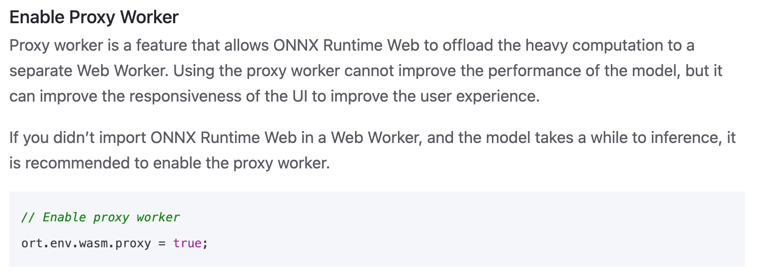</p>
<p>worker.js的代码如下</p>
<figure class="highlight javascript"><table><tr><td class="gutter"><pre><span class="line">1</span><br><span class="line">2</span><br><span class="line">3</span><br><span class="line">4</span><br><span class="line">5</span><br><span class="line">6</span><br><span class="line">7</span><br><span class="line">8</span><br><span class="line">9</span><br><span class="line">10</span><br><span class="line">11</span><br><span class="line">12</span><br><span class="line">13</span><br><span class="line">14</span><br><span class="line">15</span><br><span class="line">16</span><br><span class="line">17</span><br><span class="line">18</span><br><span class="line">19</span><br><span class="line">20</span><br><span class="line">21</span><br><span class="line">22</span><br><span class="line">23</span><br><span class="line">24</span><br><span class="line">25</span><br><span class="line">26</span><br><span class="line">27</span><br><span class="line">28</span><br></pre></td><td class="code"><pre><span class="line">importScripts(</span><br><span class="line">  <span class="string">"https://cdn.jsdelivr.net/npm/onnxruntime-web@1.17.1/dist/ort.min.js"</span>,</span><br><span class="line">);</span><br><span class="line"></span><br><span class="line"><span class="keyword">let</span> model = <span class="literal">null</span>;</span><br><span class="line">ort.InferenceSession.create(<span class="string">"./rps_best.onnx"</span>, &#123;</span><br><span class="line">  executionProviders: [<span class="string">"wasm"</span>],</span><br><span class="line">  graphOptimizationLevel: <span class="string">"all"</span>,</span><br><span class="line">&#125;).then(<span class="function">(<span class="params">res</span>) =&gt;</span> &#123;</span><br><span class="line">  model = res;</span><br><span class="line">  <span class="built_in">console</span>.log(<span class="string">"model"</span>, model);</span><br><span class="line">  postMessage(&#123; <span class="attr">type</span>: <span class="string">"modelLoaded"</span> &#125;);</span><br><span class="line">&#125;);</span><br><span class="line"></span><br><span class="line"><span class="keyword">async</span> <span class="function"><span class="keyword">function</span> <span class="title">run_model</span>(<span class="params">input</span>) </span>&#123;</span><br><span class="line">  <span class="keyword">if</span> (!model) &#123;</span><br><span class="line">    model = <span class="keyword">await</span> model;</span><br><span class="line">  &#125;</span><br><span class="line">  input = <span class="keyword">new</span> ort.Tensor(<span class="built_in">Float32Array</span>.from(input), [<span class="number">1</span>, <span class="number">3</span>, <span class="number">640</span>, <span class="number">640</span>]);</span><br><span class="line">  <span class="keyword">const</span> outputs = <span class="keyword">await</span> model.run(&#123; <span class="attr">images</span>: input &#125;);</span><br><span class="line">  <span class="keyword">return</span> outputs[<span class="string">"output0"</span>].data;</span><br><span class="line">&#125;</span><br><span class="line"></span><br><span class="line">onmessage = <span class="keyword">async</span> (event) =&gt; &#123;</span><br><span class="line">  <span class="keyword">const</span> &#123; input, startTime &#125; = event.data;</span><br><span class="line">  <span class="keyword">const</span> output = <span class="keyword">await</span> run_model(input);</span><br><span class="line">  postMessage(&#123; <span class="attr">type</span>: <span class="string">"modelResult"</span>, <span class="attr">result</span>: output, startTime &#125;);</span><br><span class="line">&#125;;</span><br></pre></td></tr></table></figure>
<p>绘制最终检测框的代码如下：</p>
<figure class="highlight javascript"><table><tr><td class="gutter"><pre><span class="line">1</span><br><span class="line">2</span><br><span class="line">3</span><br><span class="line">4</span><br><span class="line">5</span><br><span class="line">6</span><br><span class="line">7</span><br><span class="line">8</span><br><span class="line">9</span><br><span class="line">10</span><br><span class="line">11</span><br><span class="line">12</span><br><span class="line">13</span><br><span class="line">14</span><br><span class="line">15</span><br><span class="line">16</span><br><span class="line">17</span><br><span class="line">18</span><br><span class="line">19</span><br><span class="line">20</span><br><span class="line">21</span><br><span class="line">22</span><br><span class="line">23</span><br><span class="line">24</span><br><span class="line">25</span><br><span class="line">26</span><br></pre></td><td class="code"><pre><span class="line"><span class="function"><span class="keyword">function</span> <span class="title">draw_boxes</span>(<span class="params">canvas, boxes</span>) </span>&#123;</span><br><span class="line">  <span class="keyword">const</span> ctx = canvas.getContext(<span class="string">"2d"</span>);</span><br><span class="line">  ctx.strokeStyle = <span class="string">"#00FF00"</span>;</span><br><span class="line">  ctx.lineWidth = <span class="number">3</span>;</span><br><span class="line">  ctx.font = <span class="string">"18px serif"</span>;</span><br><span class="line">  boxes.forEach(<span class="function">(<span class="params">[x1, y1, x2, y2, label]</span>) =&gt;</span> &#123;</span><br><span class="line">    ctx.strokeRect(x1, y1, x2 - x1, y2 - y1);</span><br><span class="line">    ctx.fillStyle = <span class="string">"#00ff00"</span>;</span><br><span class="line">    <span class="keyword">const</span> width = ctx.measureText(label).width;</span><br><span class="line">    ctx.fillRect(x1, y1, width + <span class="number">10</span>, <span class="number">25</span>);</span><br><span class="line">    ctx.fillStyle = <span class="string">"#000000"</span>;</span><br><span class="line">    ctx.fillText(label, x1, y1 + <span class="number">18</span>);</span><br><span class="line">  &#125;);</span><br><span class="line"></span><br><span class="line">  <span class="comment">// 绘制 Infer count 和 Average infer time</span></span><br><span class="line">  ctx.font = <span class="string">"16px Arial"</span>;</span><br><span class="line">  ctx.fillStyle = <span class="string">"black"</span>;</span><br><span class="line">  ctx.fillText(<span class="string">`Infer count: <span class="subst">$&#123;inferCount&#125;</span>`</span>, <span class="number">10</span>, <span class="number">20</span>);</span><br><span class="line">  ctx.fillText(</span><br><span class="line">    <span class="string">`Average infer time: <span class="subst">$&#123;</span></span></span><br><span class="line"><span class="string"><span class="subst">      inferCount ? <span class="built_in">parseInt</span>(totalInferTime <span class="regexp">/ inferCount) : 0</span></span></span></span><br><span class="line"><span class="string"><span class="subst"><span class="regexp">    &#125; ms`,</span></span></span></span><br><span class="line"><span class="string"><span class="subst"><span class="regexp">    10,</span></span></span></span><br><span class="line"><span class="string"><span class="subst"><span class="regexp">    40,</span></span></span></span><br><span class="line"><span class="string"><span class="subst"><span class="regexp">  );</span></span></span></span><br><span class="line"><span class="string"><span class="subst"><span class="regexp">&#125;</span></span></span></span><br></pre></td></tr></table></figure>

<p>刚开始运行，除了会加载模型文件（12.2M），还会加载一个wasm library（2.6M）作为backend来调用cpu资源<br>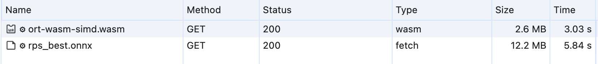</p>
<p>在我的 Mac M1 Chrome浏览器上，平均推理一次差不多要600ms（如下图）<br>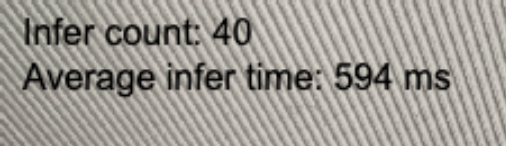</p>
<p>后续主要从两个方向着手优化：</p>
<ul>
<li>减小模型文件尺寸，提升加载速度</li>
<li>挖掘端侧性能，从而降低推理耗时</li>
</ul>
<h3 id="七、优化"><a href="#七、优化" class="headerlink" title="七、优化"></a>七、优化</h3><h4 id="1-模型量化"><a href="#1-模型量化" class="headerlink" title="1.模型量化"></a>1.模型量化</h4><p>模型量化是指将模型中的浮点权重和激活值转换为低精度整数类型，例如 int8 或 int16 的过程，这可以显著减小模型的大小和内存占用</p>
<p>我这里使用了动态uint8量化，在量化前还需要做一次preprocess，其中包含了对model的optimize，具体可参考<a href="https://onnxruntime.ai/docs/performance/model-optimizations/quantization.html" target="_blank" rel="noopener">官方文档</a></p>
<figure class="highlight python"><table><tr><td class="gutter"><pre><span class="line">1</span><br><span class="line">2</span><br><span class="line">3</span><br><span class="line">4</span><br><span class="line">5</span><br><span class="line">6</span><br><span class="line">7</span><br><span class="line">8</span><br><span class="line">9</span><br></pre></td><td class="code"><pre><span class="line">!pip install onnxruntime</span><br><span class="line"></span><br><span class="line"><span class="comment"># https://github.com/microsoft/onnxruntime-inference-examples/blob/main/quantization/image_classification/cpu/ReadMe.md</span></span><br><span class="line">!python -m onnxruntime.quantization.preprocess --input rps_best.onnx --output rps_best_infer.onnx</span><br><span class="line"></span><br><span class="line"><span class="keyword">from</span> onnxruntime.quantization <span class="keyword">import</span> quantize_dynamic, quantize_static, QuantType</span><br><span class="line">model_fp32 = <span class="string">'./rps_best_infer.onnx'</span></span><br><span class="line">model_quant = <span class="string">'./rps_best_uint8.onnx'</span></span><br><span class="line">quantized_model = quantize_dynamic(model_fp32, model_quant, weight_type=QuantType.QUInt8)</span><br></pre></td></tr></table></figure>
<p>量化后的模型，大小从12.2M，减少到3.3M，体积减小了四分之一<br></p>
<h4 id="2-使用SIMD-多线程加速wasm-backend"><a href="#2-使用SIMD-多线程加速wasm-backend" class="headerlink" title="2.使用SIMD+多线程加速wasm backend"></a>2.使用SIMD+多线程加速wasm backend</h4><p>SIMD 是 Single Instruction, Multiple Data 的缩写，指的是单指令多数据。SIMD 指令可以同时对多个数据进行操作，从而提高数据处理速度</p>
<p>多线程可以有效利用多核CPU资源，从而提高性能<br>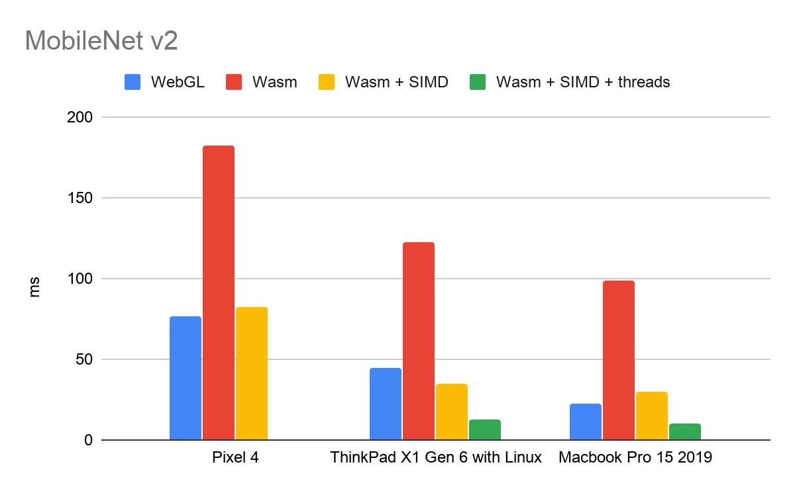</p>
<p>onnxruntime-web的SIMD是默认开启的，而多线程需要服务端返回COOP/COEP响应头，以在浏览器端启用跨域隔离（如下图），详情参考<a href="https://web.dev/articles/cross-origin-isolation-guide?hl=zh-cn" target="_blank" rel="noopener">这里</a><br>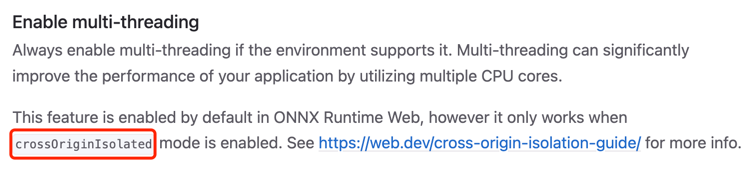</p>
<p>由于我使用的vercel部署，直接在<code>vercel.json</code>中添加配置即可让vercel返回相关http头</p>
<figure class="highlight json"><table><tr><td class="gutter"><pre><span class="line">1</span><br><span class="line">2</span><br><span class="line">3</span><br><span class="line">4</span><br><span class="line">5</span><br><span class="line">6</span><br><span class="line">7</span><br><span class="line">8</span><br><span class="line">9</span><br><span class="line">10</span><br><span class="line">11</span><br><span class="line">12</span><br><span class="line">13</span><br><span class="line">14</span><br><span class="line">15</span><br><span class="line">16</span><br><span class="line">17</span><br></pre></td><td class="code"><pre><span class="line">&#123;</span><br><span class="line">  <span class="attr">"headers"</span>: [</span><br><span class="line">    &#123;</span><br><span class="line">      <span class="attr">"source"</span>: <span class="string">"/(.*)"</span>,</span><br><span class="line">      <span class="attr">"headers"</span>: [</span><br><span class="line">        &#123;</span><br><span class="line">          <span class="attr">"key"</span>: <span class="string">"Cross-Origin-Embedder-Policy"</span>,</span><br><span class="line">          <span class="attr">"value"</span>: <span class="string">"require-corp"</span></span><br><span class="line">        &#125;,</span><br><span class="line">        &#123;</span><br><span class="line">          <span class="attr">"key"</span>: <span class="string">"Cross-Origin-Opener-Policy"</span>,</span><br><span class="line">          <span class="attr">"value"</span>: <span class="string">"same-origin"</span></span><br><span class="line">        &#125;</span><br><span class="line">      ]</span><br><span class="line">    &#125;</span><br><span class="line">  ]</span><br><span class="line">&#125;</span><br></pre></td></tr></table></figure>
<p>启用wasm多线程后，在PC端Chrome上的平均推理时间，从600ms左右减少到269ms<br>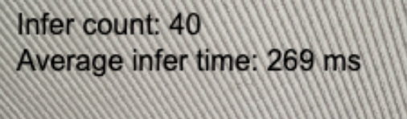</p>
<h3 id="八、有待改进的地方"><a href="#八、有待改进的地方" class="headerlink" title="八、有待改进的地方"></a>八、有待改进的地方</h3><p>1.最新版onnx支持int4量化，可以进一步压缩模型体积，减少通过网络传输的数据量</p>
<p>2.尝试将模型资源部署到国内节点，提升传输速度和稳定性</p>
<p>3.在手机浏览器上测试，平均推理时间需要1600ms~2000ms，不确定是手机计算资源孱弱，还是某些加速功能未开启，有待验证</p>
<p>4.在尝试使用WebGL和WebGPU provider时，遇到了一些问题，还未解决，如果能利用端侧设备的GPU资源，则可以更好得加速模型推理</p>
<p>5.可以尝试onnx以外的解决方案，也许会有更好的性能</p>
<p>参考：</p>
<p><a href="https://www.infoq.cn/article/hi2vrxfevlelcvvov0g7" target="_blank" rel="noopener">使用 SIMD 和多线程增强 TensorFlow.js WebAssembly 后端</a></p>
<p><a href="https://web.dev/articles/cross-origin-isolation-guide?hl=zh-cn" target="_blank" rel="noopener">关于启用跨域隔离的指南</a></p>
<p><a href="https://mp.weixin.qq.com/s/i_vAtCfM5eE6N6R5Sqo6zA" target="_blank" rel="noopener">AI模型部署 | onnxruntime部署RT-DETR目标检测模型</a></p>
<p><a href="https://dev.to/andreygermanov/how-to-create-yolov8-based-object-detection-web-service-using-python-julia-nodejs-javascript-go-and-rust-4o8e#explore" target="_blank" rel="noopener">How to create YOLOv8-based object detection web service using Python, Julia, Node.js, JavaScript, Go and Rust</a></p>
<p><a href="https://onnxruntime.ai/docs/tutorials/web/" target="_blank" rel="noopener">ONNX Web官方文档</a></p>
<p><a href="https://dev.to/andreygermanov/how-to-detect-objects-in-videos-in-a-web-browser-using-yolov8-neural-network-and-javascript-lfb" target="_blank" rel="noopener">How to detect objects in videos in a web browser using YOLOv8 neural network and JavaScript</a></p>
<p><a href="https://juejin.cn/post/7210273155885645885" target="_blank" rel="noopener">YOLOv8初体验：检测、跟踪、模型部署</a></p>

    </div>

    
    
    

      <footer class="post-footer">
          
          <div class="post-tags">
              <a href="/tags/%E7%9B%AE%E6%A0%87%E6%A3%80%E6%B5%8B/" rel="tag"><i class="fa fa-tag"></i> 目标检测</a>
              <a href="/tags/yolo/" rel="tag"><i class="fa fa-tag"></i> yolo</a>
              <a href="/tags/onnx/" rel="tag"><i class="fa fa-tag"></i> onnx</a>
          </div>

        


        
    <div class="post-nav">
      <div class="post-nav-item">
    <a href="/yolov8-food-detection/" rel="prev" title="基于YOLOv8的菜品检测实验">
      <i class="fa fa-chevron-left"></i> 基于YOLOv8的菜品检测实验
    </a></div>
      <div class="post-nav-item">
    <a href="/enable-webgpu-accelerate-model-inference/" rel="next" title="启用 WebGPU 加速 Web 端模型推理">
      启用 WebGPU 加速 Web 端模型推理 <i class="fa fa-chevron-right"></i>
    </a></div>
    </div>
      </footer>
    
  </article>
  
  
  


          </div>
          
    
  <div class="comments">
    <div id="disqus_thread">
      <noscript>Please enable JavaScript to view the comments powered by Disqus.</noscript>
    </div>
  </div>
  

<script>
  window.addEventListener('tabs:register', () => {
    let { activeClass } = CONFIG.comments;
    if (CONFIG.comments.storage) {
      activeClass = localStorage.getItem('comments_active') || activeClass;
    }
    if (activeClass) {
      let activeTab = document.querySelector(`a[href="#comment-${activeClass}"]`);
      if (activeTab) {
        activeTab.click();
      }
    }
  });
  if (CONFIG.comments.storage) {
    window.addEventListener('tabs:click', event => {
      if (!event.target.matches('.tabs-comment .tab-content .tab-pane')) return;
      let commentClass = event.target.classList[1];
      localStorage.setItem('comments_active', commentClass);
    });
  }
</script>

        </div>
          
  
  <div class="toggle sidebar-toggle">
    <span class="toggle-line toggle-line-first"></span>
    <span class="toggle-line toggle-line-middle"></span>
    <span class="toggle-line toggle-line-last"></span>
  </div>

  <aside class="sidebar">
    <div class="sidebar-inner">

      <ul class="sidebar-nav motion-element">
        <li class="sidebar-nav-toc">
          文章目录
        </li>
        <li class="sidebar-nav-overview">
          站点概览
        </li>
      </ul>

      <!--noindex-->
      <div class="post-toc-wrap sidebar-panel">
          <div class="post-toc motion-element"><ol class="nav"><li class="nav-item nav-level-3"><a class="nav-link" href="#一、前期准备"><span class="nav-text">一、前期准备</span></a><ol class="nav-child"><li class="nav-item nav-level-4"><a class="nav-link" href="#1-数据集"><span class="nav-text">1.数据集</span></a></li><li class="nav-item nav-level-4"><a class="nav-link" href="#2-端侧设备与预训练模型选择"><span class="nav-text">2.端侧设备与预训练模型选择</span></a></li></ol></li><li class="nav-item nav-level-3"><a class="nav-link" href="#二、模型训练"><span class="nav-text">二、模型训练</span></a></li><li class="nav-item nav-level-3"><a class="nav-link" href="#三、模型导出onnx格式"><span class="nav-text">三、模型导出onnx格式</span></a><ol class="nav-child"><li class="nav-item nav-level-4"><a class="nav-link" href="#1-什么是ONNX和ONNX-Runtime"><span class="nav-text">1.什么是ONNX和ONNX Runtime</span></a></li><li class="nav-item nav-level-4"><a class="nav-link" href="#2-导出onnx格式"><span class="nav-text">2.导出onnx格式</span></a></li></ol></li><li class="nav-item nav-level-3"><a class="nav-link" href="#四、搭配onnxruntime的数据预处理"><span class="nav-text">四、搭配onnxruntime的数据预处理</span></a><ol class="nav-child"><li class="nav-item nav-level-4"><a class="nav-link" href="#1-YOLOv8和onnxruntime在使用上的区别"><span class="nav-text">1.YOLOv8和onnxruntime在使用上的区别</span></a></li><li class="nav-item nav-level-4"><a class="nav-link" href="#2-python版的数据预处理"><span class="nav-text">2.python版的数据预处理</span></a></li><li class="nav-item nav-level-4"><a class="nav-link" href="#3-javascript版的数据预处理"><span class="nav-text">3.javascript版的数据预处理</span></a></li></ol></li><li class="nav-item nav-level-3"><a class="nav-link" href="#五、搭配onnxruntime的数据后处理"><span class="nav-text">五、搭配onnxruntime的数据后处理</span></a><ol class="nav-child"><li class="nav-item nav-level-4"><a class="nav-link" href="#1-python版的数据后处理"><span class="nav-text">1.python版的数据后处理</span></a></li><li class="nav-item nav-level-4"><a class="nav-link" href="#2-IoU与NMS的实现"><span class="nav-text">2.IoU与NMS的实现</span></a></li><li class="nav-item nav-level-4"><a class="nav-link" href="#3-javascript版的数据后处理"><span class="nav-text">3.javascript版的数据后处理</span></a></li></ol></li><li class="nav-item nav-level-3"><a class="nav-link" href="#六、模型部署与推理"><span class="nav-text">六、模型部署与推理</span></a></li><li class="nav-item nav-level-3"><a class="nav-link" href="#七、优化"><span class="nav-text">七、优化</span></a><ol class="nav-child"><li class="nav-item nav-level-4"><a class="nav-link" href="#1-模型量化"><span class="nav-text">1.模型量化</span></a></li><li class="nav-item nav-level-4"><a class="nav-link" href="#2-使用SIMD-多线程加速wasm-backend"><span class="nav-text">2.使用SIMD+多线程加速wasm backend</span></a></li></ol></li><li class="nav-item nav-level-3"><a class="nav-link" href="#八、有待改进的地方"><span class="nav-text">八、有待改进的地方</span></a></li></ol></div>
      </div>
      <!--/noindex-->

      <div class="site-overview-wrap sidebar-panel">
        <div class="site-author motion-element" itemprop="author" itemscope itemtype="http://schema.org/Person">
    
  <p class="site-author-name" itemprop="name">roubin</p>
  <div class="site-description" itemprop="description">芝兰其室，金石其心<br/>仁义为友，道德为师</div>
</div>
<div class="site-state-wrap motion-element">
  <nav class="site-state">
      <div class="site-state-item site-state-posts">
          <a href="/archives/">
        
          <span class="site-state-item-count">135</span>
          <span class="site-state-item-name">日志</span>
        </a>
      </div>
      <div class="site-state-item site-state-categories">
            <a href="/categories/">
          
        <span class="site-state-item-count">37</span>
        <span class="site-state-item-name">分类</span></a>
      </div>
      <div class="site-state-item site-state-tags">
            <a href="/tags/">
          
        <span class="site-state-item-count">74</span>
        <span class="site-state-item-name">标签</span></a>
      </div>
  </nav>
</div>
  <div class="links-of-author motion-element">
      <span class="links-of-author-item">
        <a href="https://github.com/satorioh" title="GitHub → https://github.com/satorioh" rel="noopener" target="_blank"><i class="fab fa-github fa-fw"></i>GitHub</a>
      </span>
      <span class="links-of-author-item">
        <a href="mailto:wangbinxp@gmail.com" title="E-Mail → mailto:wangbinxp@gmail.com" rel="noopener" target="_blank"><i class="fa fa-envelope fa-fw"></i>E-Mail</a>
      </span>
  </div>


      </div>

    </div>
  </aside>
  <div id="sidebar-dimmer"></div>


      </div>
    </main>

    <footer class="footer">
      <div class="footer-inner">
        

        

<div class="copyright">
  
  &copy; 2015 – 
  <span itemprop="copyrightYear">2024</span>
  <span class="with-love">
    <i class="fa fa-heart"></i>
  </span>
  <span class="author" itemprop="copyrightHolder">roubin</span>
</div>
  <div class="powered-by">由 <a href="https://hexo.io" class="theme-link" rel="noopener" target="_blank">Hexo</a> & <a href="https://pisces.theme-next.org" class="theme-link" rel="noopener" target="_blank">NexT.Pisces</a> 强力驱动
  </div>

        


      </div>
    </footer>
  </div>

  
  <script src="/lib/anime.min.js"></script>
  <script src="/lib/velocity/velocity.min.js"></script>
  <script src="/lib/velocity/velocity.ui.min.js"></script>

<script src="/js/utils.js"></script>

<script src="/js/motion.js"></script>


<script src="/js/schemes/pisces.js"></script>


<script src="/js/next-boot.js"></script>


  
  <script>
    (function(){
      var canonicalURL, curProtocol;
      //Get the <link> tag
      var x=document.getElementsByTagName("link");
		//Find the last canonical URL
		if(x.length > 0){
			for (i=0;i<x.length;i++){
				if(x[i].rel.toLowerCase() == 'canonical' && x[i].href){
					canonicalURL=x[i].href;
				}
			}
		}
    //Get protocol
	    if (!canonicalURL){
	    	curProtocol = window.location.protocol.split(':')[0];
	    }
	    else{
	    	curProtocol = canonicalURL.split(':')[0];
	    }
      //Get current URL if the canonical URL does not exist
	    if (!canonicalURL) canonicalURL = window.location.href;
	    //Assign script content. Replace current URL with the canonical URL
      !function(){var e=/([http|https]:\/\/[a-zA-Z0-9\_\.]+\.baidu\.com)/gi,r=canonicalURL,t=document.referrer;if(!e.test(r)){var n=(String(curProtocol).toLowerCase() === 'https')?"https://sp0.baidu.com/9_Q4simg2RQJ8t7jm9iCKT-xh_/s.gif":"//api.share.baidu.com/s.gif";t?(n+="?r="+encodeURIComponent(document.referrer),r&&(n+="&l="+r)):r&&(n+="?l="+r);var i=new Image;i.src=n}}(window);})();
  </script>


  
<script src="/js/local-search.js"></script>


  

  

<script>
  function loadCount() {
    var d = document, s = d.createElement('script');
    s.src = 'https://roubinme.disqus.com/count.js';
    s.id = 'dsq-count-scr';
    (d.head || d.body).appendChild(s);
  }
  // defer loading until the whole page loading is completed
  window.addEventListener('load', loadCount, false);
</script>
<script>
  var disqus_config = function() {
    this.page.url = "https://roubin.me/yolov8-onnxruntime-web-deploy/";
    this.page.identifier = "yolov8-onnxruntime-web-deploy/";
    this.page.title = "基于ONNX的Web端YOLOv8模型部署与推理";
    };
  NexT.utils.loadComments(document.querySelector('#disqus_thread'), () => {
    if (window.DISQUS) {
      DISQUS.reset({
        reload: true,
        config: disqus_config
      });
    } else {
      var d = document, s = d.createElement('script');
      s.src = 'https://roubinme.disqus.com/embed.js';
      s.setAttribute('data-timestamp', '' + +new Date());
      (d.head || d.body).appendChild(s);
    }
  });
</script>

</body>
</html>
